About Tanzania
About Tanzania What jumps to your mind when someone tells you about the “modern African tribes"? Pictures and videos of skinny dark-skinned men in red plaids bouncing high into the air. Bald-headed women dressed up in colorful beads from head to toe, singing ritual songs with repetitive verses. Ochre-dyed hair, crouched huts, a lonesome shepherd tending his skinny humped cows amidst the savannah - aren’t these all the images coming to your mind when you try to describe the indigenous people of Africa? Have you ever thought of all of these images being created by representatives of one and only, best-known African tribe - the Maasai? The tribe of nomads and warriors who steadfastly refuse the temptations of civilization and have been living their ancestors' way of life up to this day.
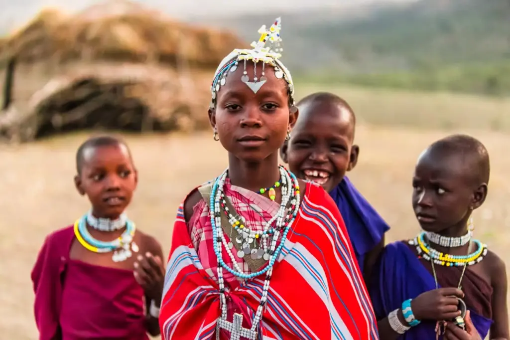
Through the eyes of a neophyte tourist. Who Are The Maasai?
As you first step out of the Tanzanian arrivals terminal, you might see local guys and young ladies, festively dressed and welcoming travelers. If you happen to visit larger Tanzanian towns like Arusha, or Zanzibar beaches, you might spot some people wearing traditional attire - red and blue plaids, with their arms and necks bead-covered. They are happy to pose for your camera if you can offer a small tip for it. Treat them the same way you would treat a Cinderella in the Disney park - they are just guisers and street actors who make money by amusing the idling tourists. You won’t find a real Maasai warrior among them.
Local souvenir stores and markets sell a variety of beads, wooden accessories, and other knick-knacks. Finding the distinctive colorful scarves and plaids known as “shuka” is not a challenge for a tourist either. Hawkers know what foreigners like. The Maasai culture feeds East Africa, and, at least in Tanzania and Kenya, the attributes of this nomadic tribe are in high demand among tourists. It is the remote inner lands of Tanzania and Kenya where the world-famous aliens from the old African world reside - the Maasai.
What do we know about the Maasai?
The bulk of documentaries and entertaining travel shows about Africa picture the Maasai people as nomadic herders dwelling in temporary settlements in the middle of the African savanna. They would not accept city life and modern technology for the world. We see these Tanzanian tribesmen wearing red plaids reminiscent of the ancient Roman togas - the only clothes they welcome. We think of them as tall and lean, with long sticks in their hands, jumping into the air for no apparent reason - what is it? A weird fun and play, or an essential trite?
They are content to live in improvised huts close to the ground. They practice polygamy - and… circumcision? Their tribal families are perpetually at war with one another and with other tribes. They drink bull's blood and prove their courage of being true warriors by solo-defeating lions.
What is true, and what are bogus stories made up by countless filmmakers and travel bloggers? Aren’t these storytellers just chasing ratings and YouTube views, always exaggerating and leg-pulling?
Well, we can bet that modern Maasai cling to the traditions of tribal communities, feed on cattle breeding, are ignorant in writing and reading skills but good at swords, spears and bows, make fire by friction and reject almost all creature comforts that we, modern people, are so spoiled with in our 21st-century world.
The Maasai and a few other tribal peoples that still remain minimally influenced by the amenities of today are the living but vanishing opportunities to connect with our common past of humanity.
Tanzania and Kenya’s Indigenous Maasai People
"Maasai" literally means "one who speaks the Maa language.” This ancient language is currently used by at least half a dozen ethnic groups, constituting the sub-tribes of the Maasai people. It results in a wide diversity of sub-dialects changing from one Maasai settlement to another. However, many Maasai have a command of English and Swahili ever since English and Swahili were introduced as the official languages of Tanzania. The closer the settlements are located to large Tanzanian towns and tourist areas, the more prevalent English and Swahili are among Maasai.
The Maasai is one of about 3,000 tribes in modern Africa. They are not among the so-called uncontacted peoples who outright deny contact with the outside world. However, the modern Maasai do live isolated from their neighbors, speak their language, fervently abide by their tribal traditions, do not have passports, and move freely within the territories they consider their own.
The Maasai tribes are settled next to huge national park areas of Tanzania - across a territory currently known as the Maasailand. Maasailand includes part of the Great Rift Valley in Kenya and northern Tanzania spreading from the Serengeti to Kilimanjaro.
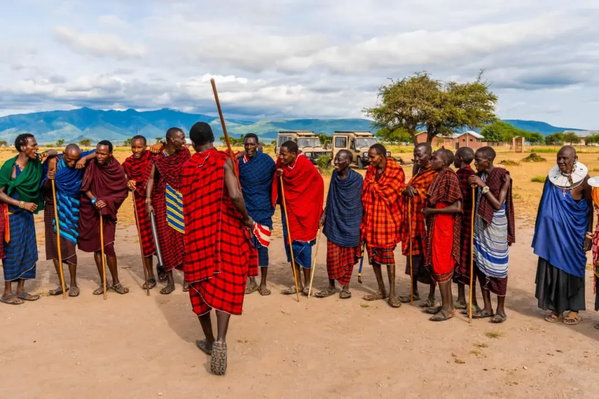
Maasai Numbers Today
Tanzania and Kenya are having a hard time keeping track of their Maasai. Single tribes are continuously migrating, occasionally crossing state borders. While the Kenyan government counted about 1.2 million Maasai individuals during the 2019 census, Tanzanian takers are doing worse, failing to factor ethnicity into census collection. Put simply, we lack the official data on the number of Maasai in Tanzania. It is believed that the Maasai constitute about two million of the country’s population as of today.
As a matter of fact, this proud tribe does not like the officials intruding on their lives and disrupting their daily routine. And for that matter, how do you ever get a birth certificate or an ID without even knowing your exact age? Frequent randomizing of birth dates and other bio-data are not uncommon when it comes to actually counting the Maasai.
Modern Maasai Life
Despite their long-standing ferocious image and observance of warrior customs, the Maasai today is a fairly peaceful people. Although all men at some point become warriors (Morans) and proudly brush aside their daily work, it is more of a nod to tradition. The Maasai carry weighty clubs and sometimes even short swords, which are rarely used though - there is nothing and no one to fight.
What we should realize about these present-day savannah dwellers - they continue to remain herders. Herds of cows and goats are the main care-about and the only value recognized within Maasai.
All sources name the Maasai as a semi-nomadic tribe. They tend their herds, occasionally taking off and moving on to new pastures. A modern Maasai settlement can remain in one place for years if it provides enough fodder for the cows or disappears as soon as someone dies there and the Elders tell them to drift somewhere else. Some families simply follow a seasonal schedule, fallowing and guarding their pastures to return for the next season.
Maasai Eco-House
A typical Maasai hut is constructed as a frame of long poles interlaced with thinner bendable rods. The huts come without doors - you can get inside through an open passage. The outside and inside of the walls are coated with a mixture of dung and wet soil. When water is scarce, which is typical of the tropical climate, cow urine is used to moisture the building material. The roof is also smeared and plastered with the same unsophisticated mixture and covered with dry grass.
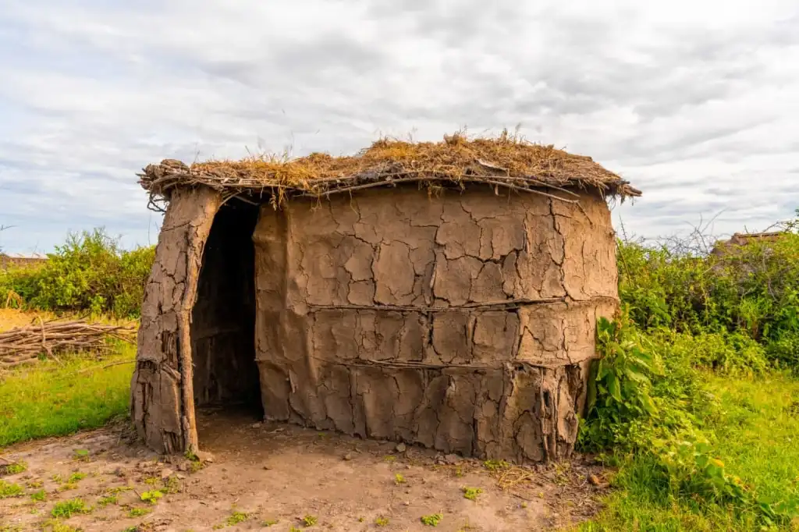
These huts provide a reliable shelter from the heat, rain, and wind. When it’s hot, the dung mixture is fast to dry out and crack. When it happens, the huts undergo a renovation: the walls and roof are further secured with additional dung-and-soil layers. It is an ongoing process that requires daily labor and hugely depends on the cows - as soon as they deliver the building material, the Maasai get to work, so the good stuff doesn't go to waste.
Kraal - a typical Maasai village
All the huts are lined up, encircling a cattle pen in the center. Cows and goats are driven inside at night to protect them from predators. A typical African stakewall is placed around the settlement, made up of a sturdy fence of thorny acacia branches at least a meter and a half high. As a rule, there is only one wide passageway for people and cattle in and out of the settlement. Such Maasai settlements are called kraals, or bomas.
Bomas are typical of all East African tribes. Sometimes an additional circular fence is set up inside a boma, and bonfires are set between the two fences at nighttime. In remote areas, it is a common way of protecting the boma from lion prides congregating and coming round the people’s dwellings. A few cases were reported about the tribal families whose small herds were ravaged and exterminated by wild predators. It is most common in the grazing season when the savannah plains are full of fresh grass.
When the time comes to take off and move on to new pastures, the Maasai shake the dry dung and soil down the walls, dismantle the pole frames, and carry all the material to a new site, where a new settlement appears in a few days.
In the past, animal skins were used in boma construction for better protection from the stresses of weather - some tribes practice it even today. Those settling closer to the urban areas discover the luxury of modern construction materials such as slate, tin sheets, polycarbonate, and iron. Today, even in remote Africa, you can see village houses built of materials commonly used anywhere else in the world, and reminiscent of your neighbors’ cottage houses.
Maasai Routine
The tribe's one and only concern is livestock. The Maasai herd cows, goats, and sheep - no poultry. Farming is considered an unworthy occupation for the proud and free people of Maasai.
If you are a Maasai, cows are your true meaning of life. The larger your herd is, the higher social status you have. Your family’s and village’s welfare hinge on how many cows you have. Herding and guarding the cows is an adult man’s business. Boys learn this from early childhood. As early as 4 or 5 years old, boys are sent to herd goats solo, without any adults nearby. Older boys are trusted with larger cattle.
Milking is a woman’s task. Apart from that, Maasai women do all the housework: fetching water from springs, stocking up on firewood, tirelessly repairing dried-out huts’ walls and roof, taking care of children, and doing everything else required to sustain life in the village. Beadwork is also a woman's job.
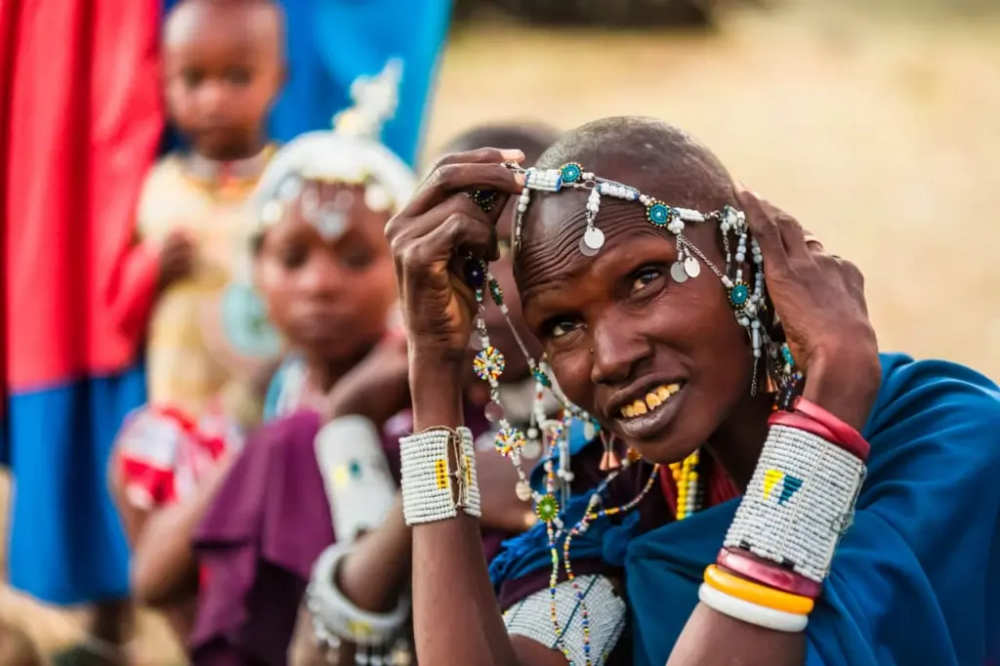
Maasai is a patriarchal society. Male elders control the strict observance of traditions in the village. One can become an Elder at quite a young age - even soon after turning 30-years-old, one can achieve a well-deserved “retirement.” As soon as the Morans become junior elders after undergoing a special rite, their duties are reduced to a minimum: tending their Elder’s image, appearance, and weapons, nominally guarding the village, holding councils, instructing women and teenagers on their chores, and counting cows coming back from pasture. If you are an Elder, you also have the right to go to town to relax and have fun in local bars. Encounters with civilization aren't completely cut off, as you can see.
There is no data about the same “retirement” practices for women, though.
Tribal Life
Communal social system assumes that several families united by blood bonds reside together. Cattle and other property are in common use; each clan member is to respect the accepted rules and partake of common chores and benefits; the clan, in its turn, is liable for the actions of every member of the community.
All male members of the clan take turns bringing goats and cows into the plains to graze; they search for waterholes for the cattle and protect the herds from cattle raids and attacks of lions, leopards, and hyenas. Women do their chores jointly. They repair houses, milk the cattle in the evening, care for children, and fetch water and firewood together. In well-off villages, donkeys are used to transport loads. As of late, the most advanced Maasai obtain motorized vehicles, although these are still rare and non-typical.
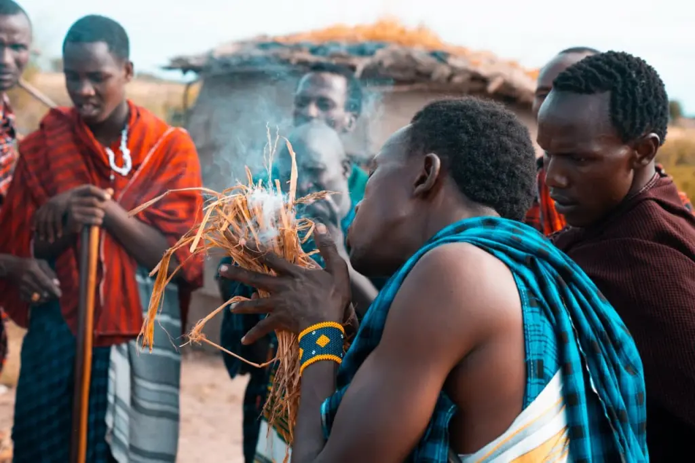
Young men stealing cattle from other clans are looked upon as something usual. An ancient belief has it that only the Maasai people were bestowed with goats and the cows, hence only they shall have the right for each and every head of cattle there is on Earth. All other crimes are punished by a fine, though. Thus, if an unruly young warrior attacks a member of another clan or, God forbid, a stranger from a wide civilized world, the whole village will be liable to pay the fine (in cows, of course). And squandering such a valuable belonging is an absolute no.
Bringing Up Young Maasai
The children start pasturing the small herds of goats once they have learned to walk unassisted. Each day they are sent further and further away from the village. The boys of three armed with a stockman’s twig are not a rare sight far outside the boma. If a predator appears, the boy shall call for the adults. By the age of 8 or 10, the young stockmen take large herds of sheep and goats away to graze for the whole day. These are the traditions of the cattle-herders by birth.
Girls, too, perform duties, helping their elders from an early age. The Maasai don’t have a habit of idleness, and a tender age is not an excuse. Judging by European standards, children are brought up harshly. For example, hitting a child for misbehavior is considered right and practical. The more pain you endure in childhood, the stronger warrior or hard worker a child can become when they grow up.
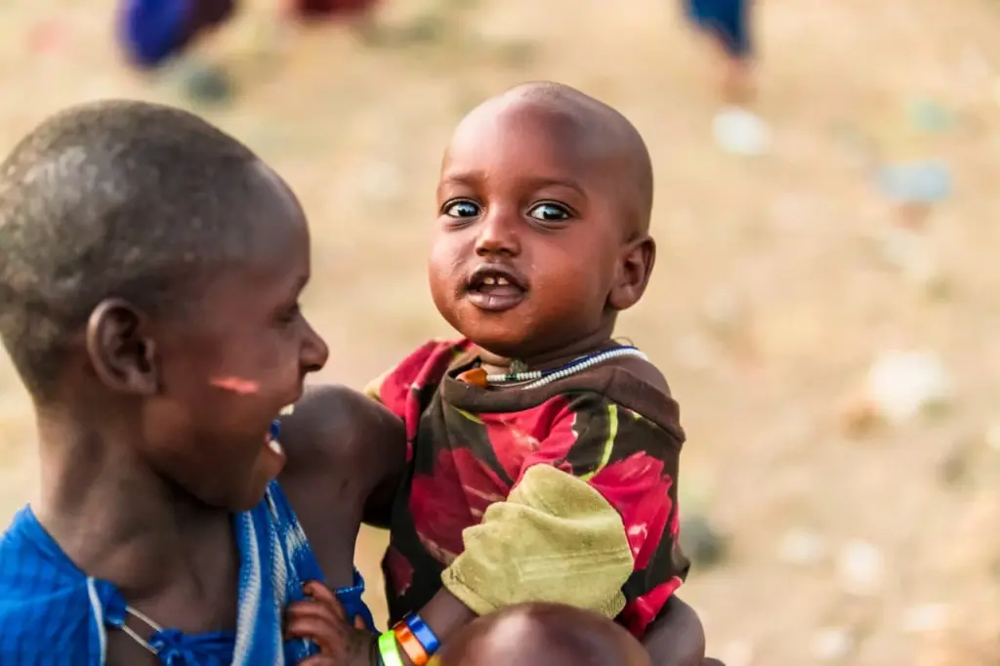
Coming of Age Rituals and painful Circumcision
All adolescents must at some point undergo the initiation ritual of becoming adults in order to prepare for marriage and childbearing. It is called emorata. Those who have not undergone initiation are despised in their native villages; they are not considered full members of the community and cannot marry or bear children. When they die, their bodies are not returned to the savannah but buried in the ground in disgrace.
At the age of about 12 or 14, the boys are circumcised. It is a painful and risky procedure, as it is performed without a single hint of hygiene and disinfection and, moreover, in plain sight of the other villagers. The boys are not allowed to scream or show they are in pain. A warrior should suffer the removal of his flesh with a knife in complete silence. The damaged organ would take several months to heal, and during all this time, it would cause discomfort and painful sensations. As a rule, though, the healing is successful.
The situation with female genital mutilation is significantly more difficult. At the same age as the boys, at 14, or sometimes even earlier, the girls’ heads and eyebrows are shaved clean. A woman from the tribe with enough experience then takes a dirty blade and cuts off a part of a young girl’s genitalia as the girl screams and thrusts in pain.
Let’s cut the details and only mention that every now and then, this severe procedure is carried out with excessive enthusiasm and the visible genitalia are as good as gone as a result. Potentially chronic inflammations, sepsis, painful urination and sexual intercourse last for a female’s lifetime, as well as the risk of infertility and stillbirth – these are, alas, the common consequences of female circumcision, or, medically speaking, of deliberate genital mutilation.
Awareness Programs
In Tanzania and Kenya, female genital mutilation is illegal. But who will force the self-righteous Maasai to obey the law of statesmen prying into their own business?! All the more reason for parents to think they are doing a good thing for their sons and daughters. An uncircumcised woman will not be taken as a wife, she will never be able to bear offspring, and she is deemed unclean.
So the women have to cut to the chase themselves. They are trying to teach sex education in schools, and the UN is actively educating Maasai women. Women from different villages, ready to discuss their national traditions, are brought together to lecture them about the basics of anatomy, medicine, and the principles of equal rights. Then these women have to retell it to their fellow tribesmen.
The process of raising awareness among the Maasai is progressing albeit slowly. Female circumcision is less frequent. And some observers note that in this nomadic tribe, information about HIV has been spreading wider in recent years. And this is of high relevance to the Maasai, who practice polygamy and sharing wives with all peers except close relatives.
The Maasai Hierarchy
After such painful rituals, the circumcised adolescents take some time to recover as their bodies recuperate. It takes six months or longer, with the young men being housed separately and exempted from work. They are now called morans and are considered young warriors.
The girls can soon be given in marriage. Their fathers are offered cows as a ransom by the grooms' families. As a rule, young women are taken as wives by those who are older and already own their own herds. If a woman chosen becomes not the first wife, then her approval of the older wife is obligatory. The more cows a Maasai warrior owns, the more women he can afford. If the widespread norm is considered to be having up to three wives, the rich men may have as many as ten. In some cases, the number of wives could be as high as thirty.
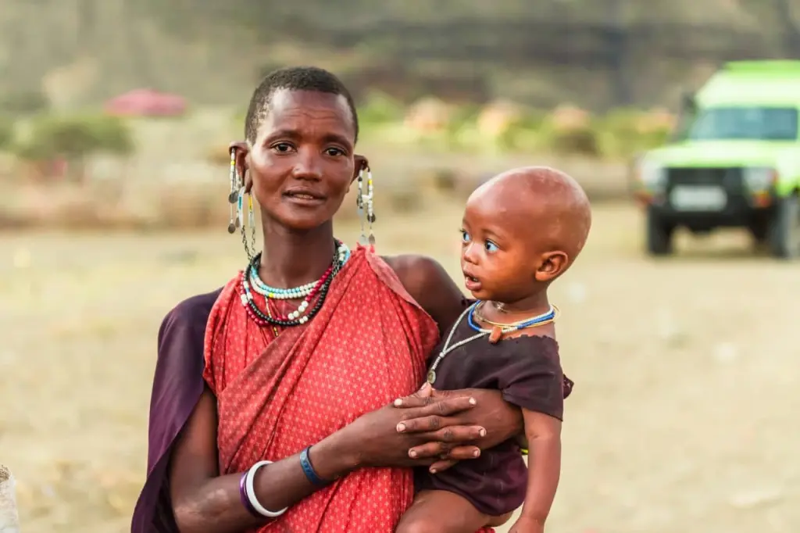
In some clans, a woman may also have several husbands. In addition, Maasai sexual traditions allow men to offer their marital bed to peers of equal status. The wife must give her consent. But if a woman gives birth to a child from such a casual union, her husband is considered to be the father.
Moran warriors are obliged to herd cows for several years and, on an equal footing with the older members of the community, to provide for the village and guard it. During this period, the men grow their hair long, braid it and dye it with ochre. This is how they are most often seen in the famous photos while doing the jumping dance.
At the age of 30 or 35, the men go through another ritual that raises their status. Moran warriors now become junior elders; they have their hair shaved off and are exempted from compulsory labor. The men can then start their own households, get married, and leave the village to form a new settlement. More often, they stay in their home village and help the elders manage the household. This can mean absolute idleness, giving orders to the younger warriors and women.
When the village needs a new chief elder, he is chosen from among the younger elders. The eldest male of the clan strictly enforces customs, resolves disputes and conflicts, makes decisions about migration, and deals with other key matters in the community.
Throughout his life, every Maasai man knows his place in the social hierarchy and follows the rules. So do all the women and children who are taught to observe traditions from a young age. This is how the people preserve their way of life and the special rules of life that distinguish them from all other tribal communities. The strictness of Maasai laws and the unquestioning obedience of elders, as well as the commitment to a nomadic way of life, allow them to live in their own manner while other peoples have been greatly influenced by civilization.
Traditions and Rituals of Maasai
In addition to initiation rites and major rituals that elevate the status of warriors, the Maasai tribes of Africa have other customs. One of the first that children encounter is the removal of their lower front teeth. This is considered a beautiful and natural decoration for little girls. Boys have a different trial waiting for them, the ceremony of fire marks. They must test their willpower by walking on their feet and hands over red-hot coals.
There is also a tradition of tattooing the children; during the ceremony, the children must endure pain. As the boys and girls reach the age of seven, they get their ears pierced. This procedure is very painful because it damages not only the soft tissue but also the cartilage. Then a hole is made in the lobe, which is gradually increased in size. This is achieved by inserting wooden and beaded ornaments and stretching the hole further and further.
There are also special festive ceremonies to commemorate the initiation into the ranks of warriors – a milk and a meat ceremony. But they are connected with the tradition for the moran warriors to live in separate camps, which is now becoming obsolete. For natural reasons, the custom of leaving for several years to live in separate camps has lost its relevance today and is not observed by all clans.
The most controversial tradition, the obligation to kill a lion to become a true moran, will be discussed below separately, as well as the rituals in which the Maasai drink the blood of their cows.
The Famous Jumping Dance
The best-known Maasai rite involves the young men jumping while performing a national dance. The dance is called the adumu. It is performed by the young warriors-to-be as they prepare to undergo the initiation rite.
They put on the garments not restricting their movements, stand up in a circle and jump the highest they can. Few can lift their feet so high from the ground. With that, Maasai land on tiptoe without touching the ground with their heels.
Alone and in twos, in rhythmic succession, tall young men clad in red blankets demonstrate their best skills. The best-trained warrior is the one who jumps higher than the others. This skill was probably crucial in times of rampant wilderness: there were few trees on the vast plains that one could climb, so jumping on the spot gave information about what was happening around, whether predators were approaching the herd, or whether warriors from hostile tribes were preparing an ambush.
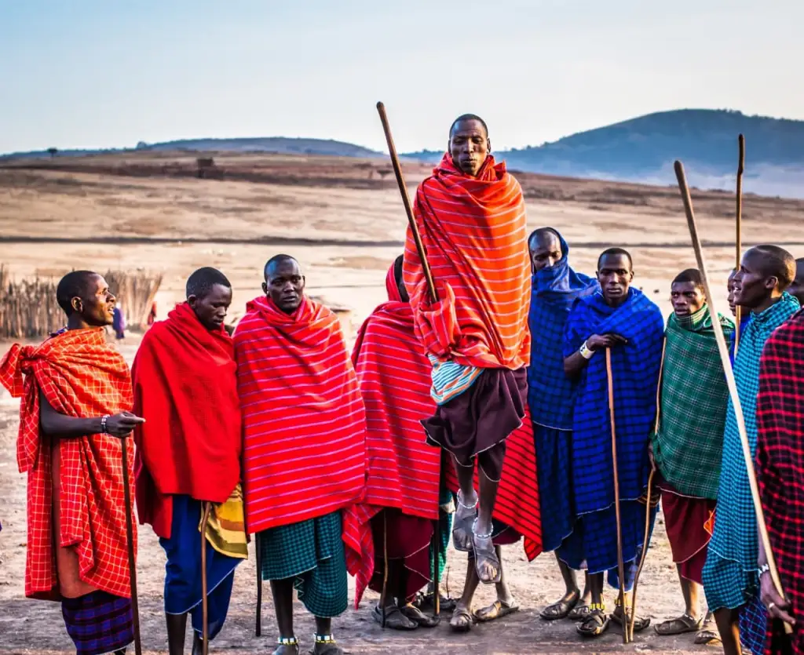
The ritual dance usually goes on the whole day long. Today, it has become a hallmark of not only the Maasai tribe but of the entire Africa. No wonder the jumping dance is an obligatory performance before the tourists, especially when the cameras turn on. Everybody benefits from the popularity of the dance, and thus the adumu can often be seen performed by other African peoples.
Maasai Garments — Colorful Shuka Capes
Almost every photo shows the Maasai men and women wearing bright red, or sometimes blue or lilac capes. Alongside the jumping dance, the clothes have become a distinctive feature of these nomads. This has yet not always been so.
Traditionally, Maasai wore animal hides for capes. At that, it was customary for the men to use calf hides, and the sheepskins for the women. The second half of the XXth century, the time of the establishment of the United Republic of Tanzania, brought along a completely unexpected fashion for these single-colored and checked cotton capes. These are called shuka and are worn in the same manner as the ancient Roman toga.
Nowadays, it is impossible to imagine the Maasai not wearing their colorful wraps. One can put on up to three shukas at a time. The first two layers are usually wrapped around the body, and the third is flung on the shoulders and serves as a cloak of sorts. Near the Tanzanian coast, kikoi kerchiefs are added to the garment; these are less bright and usually have a checkerboard pattern. It is a traditional Tanzaninan fisherman attire that the local Maasai found to their liking.
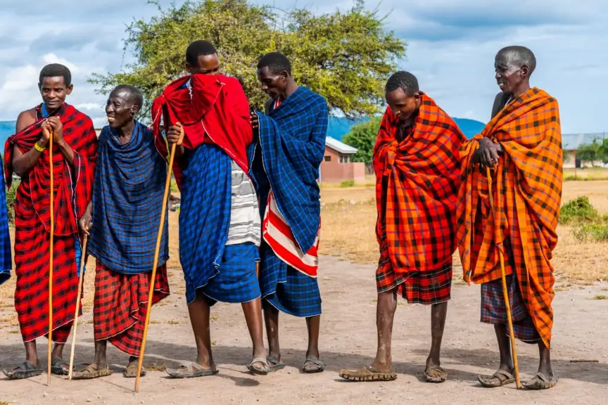
Naturally, the dwellers of remote poor villages can not afford attractive shukas, so the local sharp dressers still have to make the animal hides do.
Another noteworthy feature of the Maasai clothing is the footwear. Paying closer attention to the photographs one can find out that nowadays quite a lot of the tribesmen wear sandals self-made from the old automobile tires. A practical and comfortable solution, you bet!
Beaded Ornaments
Bracelets, necklaces, and ornaments for head and ears made of multicolored beads are obligatory attributes of any self-respecting Maasai. Experienced travelers note that the Maasai are always neat and well-groomed. You will never come upon them with their hair disheveled, faces dirty, or not wearing any ornaments. Both women and men always try to look neat and bright.
Both men and women often decorate their ears and heads. They wear bracelets on their wrists and shins. On the necks of women, beaded discs are strung; often, these are so layered the body beneath them can’t be seen. These discs can lie softly like bibs or remain firmly shaped, surrounding a woman's head from below.
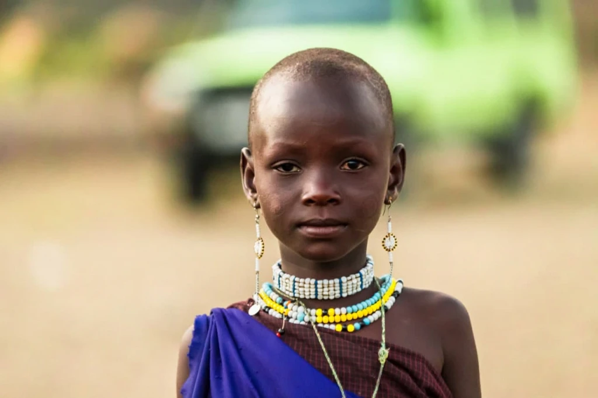
Beadwork is favorite among many peoples of Africa, but the skilled Maasai artisans seem to have outdone everyone in their desire to stand out and become the most visible on the continent. In their spare time, Masai women make beaded ornaments and souvenirs for sale. They often sell those right from the ground by the roads near the villages.
Maasai Weapons
The permanent attributes of the warriors of the tribe are a long pole, a short sword in a scabbard and a club with a thickening on one end which can be a melee weapon or a missile.
The pole is used as a staff to lean on during walking and performing the herding duties. The Maasai are capable of walking great distances. For example, many of them often walk from their settlement to town along the road, as they have no possibility to travel by vehicles. They also often stand for long periods in the middle of the savanna while their cows graze around them. The staff they lean on helps them stand straight. With due attention, one can see that the Maasai boast perfect posture. They never slouch or lie on the ground. The warriors' natural pride does not allow it.
The pole replaces the spear for warriors today though the spears are not uncommon among modern Maasai as well. They make it easier to move across the plain because a warthog, a hyena, or a larger predator can appear in the grass at any moment. Spears are made thin and flexible, with iron heads of various shapes. The Maasai constantly practice throwing their spears. The best throwers are able to send a spear flying at a distance of up to 100 meters.
The club is made of wood and is shaped like a femur (a thighbone). It can be used in close-quarter combat. Otherwise, it is a status symbol. It’s carried by men under the arm.
A short sword always hangs in a sheath on the hip. This attribute is a must for the Maasai and is always carried by them. In Tanzania, it is even allowed by airline regulations to carry the sword onboard on domestic flights to the islands of Zanzibar. The sword (or a long knife) may have no thickened handle, but the Masai are deft with it. Surprisingly, even during fast running and other activities, it remains at the hip and never hinders the warrior.
Wooden bows with arrows are not so rare. In most cases, there is no need to use them, but in remote settlements, they are still of practical use. Arrows can drive away small predators. You can use them for hunting birds or antelope. Despite the strict prohibitions on hunting in Tanzania, members of the Maasai tribe are allowed to hunt some species of cloven-hoofed animals.
Possession and carrying of firearms are strictly prohibited. It is another restriction of the official laws imposed on the Maasai, which, however, contributes to preserving the traditions in possession of edged weapons characteristic of tribal society.
The Maasai being natural-born warriors is not merely a historical reference but a skill that finds application in practice. Maasai men who leave their villages and accept wage labor are often hired as guards, for example in national parks, in remote hotels and other tourist areas, or even as private bodyguards. The image of trained Maasai warriors pays off in full.
The Maasai Food
Milk and meat are the core of the Maasai diet. Goat and beef are the first choices for meat because it is almost a crime to slaughter cows for food.
You have probably heard that the Maasai are not squeamish about the blood of cows and bulls. We will tell you below whether it's really true.
Fruits and vegetables are almost never on the regular menu of nomadic warriors. The exceptions are women and children, as well as young men during those periods when they have to live and eat outside the village.
Recently, the proud Africans have also tasted foods that are not typical of their traditions. First of all, cornmeal, which they buy and add into milk to make porridges. Rice, potatoes, cabbage, and other agricultural products also make their way into the Maasai diet. This leads some clans to begin cultivating small vegetable gardens. In general, Maasai tribe culture condemns farming, which is considered a crime against nature.
The more familiar foods that supplement the meager and unpalatable menu are honey, sheep fat, and various tree bark and roots that can be chewed for a long time. Honey is used to make mead.
Here is another one of the seemingly strange Maasai traditions: women are not allowed to cook food for men, are not allowed to be present when it is cooked, and are not even allowed to look at it. If this happens, the defiled food will be thrown away. But this approach does not seem to apply to the whole tribe or to everyday life. Most likely, the custom is relevant only for periods when the moran warriors depart from the village to live separately, and they go to special places under the tree branches to cook meat there, and women are strictly forbidden to enter such places.
The Rigor of the Maasai Traditions
It is the faithfulness to the ancestors' precepts and steadfast adherence to tribal laws that has ensured the vitality of Maasai culture as we know it. If you ask the members of nomadic clans why they continue to live as they do and give up more convenient technologies and practices, they will stubbornly repeat that this is how it’s done, that they have to do it. The Maasai say that if they abandon their way of life to create some new one, it will take thousands of years.
Out of this proud stubbornness is born the sense of self-worth that makes the Maasai resist the imposition of alien traditions and laws. They reject the attempts of Tanzanian authorities to teach them to write, to give everyone an ID card, to subjugate them to their beliefs. The Maasai pay little attention to appeals to stop wandering and switch to a settled way of life, and are always ready to pack and go in search of new pastures for the animals entrusted to them by the ancient god.
Despite all the savagery of manners and the cruelty of some customs, you begin to involuntarily respect the desire of these proud people to live by the precepts of their ancestors. After all, absolutely all peoples on earth have passed through this stage. It is impossible to condemn those who by some miracle stayed on this path. It seems more right to simply observe the living past unfolding incomprehensibly here and now, right before our eyes.
Further Reading and Watching on Maasai
There is a stunningly beautiful feature film called Maasai, The Rain Warriors. It was filmed in Africa, in the native territories of the tribe. All the roles were played by nonprofessional actors, young Maasai fellows. The director is Pascal Plisson, a French documentary filmmaker who has lived for several years in Tanzania and Kenya and has made many films about the nature and animals of Africa for television.
Having met and befriended many of the people of the Maasai tribe, Pascal realized at some point that he adored these people. He wrote an original script and persuaded professionals from Paris to come and film the Maasai as themselves. None of the novice actors could read, so they memorized the text by hearing. This was the world's first feature film made in the Maa language.
Only a documentary filmmaker could capture the beauty of nature and the beauty of the local people hidden in the details so skillfully. If you want to observe in detail the real outfits, ornaments, hairstyles and lively natural facial expressions of the Maasai, be sure to watch this film.
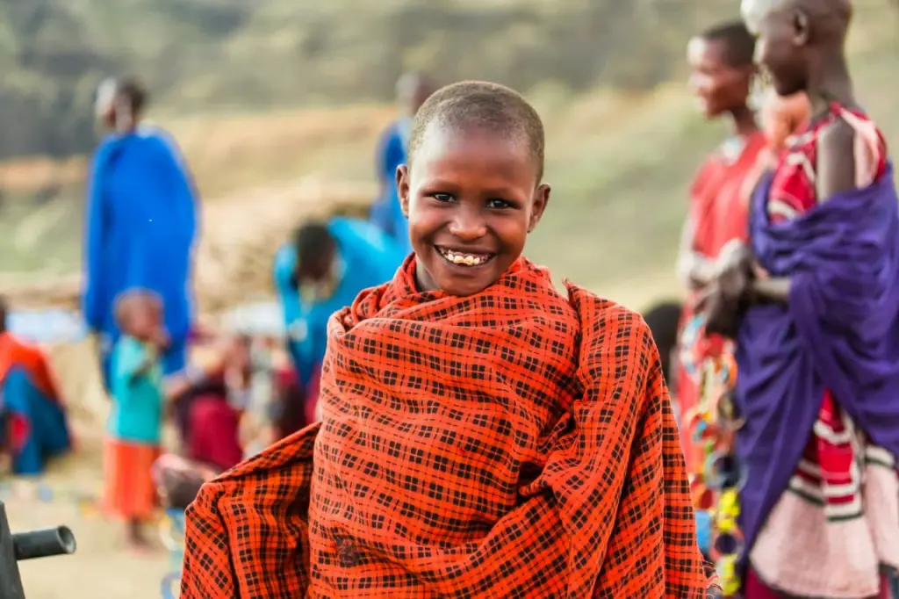
The plot tells a fictional tribal legend in which young warriors must go on a quest to find and kill a ferocious lion, thus placating the Red God and returning long-awaited rain to the Maasai lands after a prolonged drought. The ethnic-style soundtrack was composed by the famous French film composer Ivan Cassar.
Another example, The White Maasai, is the autobiography of Corinne Hofmann, a Swiss woman who went on a trip to Africa with her fiancé in 1986 but never returned. There she met a Maasai warrior whom she fell in love with and decided to stay to marry him, live in a Maasai village, and eventually have a child there.
The story is more likely to appeal to fans (for that matter, the female fans) of psychological literature about relationships. The autobiography became a bestseller, which made the author want to continue writing a memoir about her uneasy relationship with Africa and Maasai culture. By the way, the book was later used as a basis for a same-name movie.
Frequently Asked Questions about Maasai: True or False?
The Internet is full of unsubstantiated information about Maasai and some of their customs that never fail to arouse strong interest. We have undertaken to give an explanation on the most frequent questions. So, what’s a misapprehension, and what is God’s truth?
Is it true that Maasai hunt lions?
It is widely believed that the Maasai have a custom of killing lions to prove their strength and become true warriors.
The Maasai are fearless warriors, and in the past, there were indeed two types of lion hunting: personal and group hunts. In the first case, the hunt was often forced when the lion appeared while livestock was grazing. Group lion hunting was part of a competitive rite of initiation into the ranks of warriors.
The Maasai always behaved honestly toward the animals. They only fought a lion on the open plain to be on an equal footing with it. Speaking of weapons, the warrior used only a spear and sometimes took a shield with them. Maasai law forbade the pursuit of a drought-ridden lion or one that had been poisoned or caught in a net.
Once the lion population began to decline, the Maasai stopped the practice of hunting lions, turning from hunters into defenders. Now, in addition to the laws of honor, lion hunting is also forbidden by Tanzanian law. The only exception may be the killing of a lion in a course of defense when the predator attacks grazing cattle or a Maasai village.
Do lions attack people?
It is very rare for lions to attack Maasai herds; this can cause damage to the nearby people especially if there is a small child around. Every incident of this kind is made public, becoming a feature in the newsreel of the local mass media. It is right to take this news in the same way that we take the rare shocking messages about stray dogs attacking children in remote and sparsely populated areas of Russia.
Do the Maasai actually drink animal blood?
Cow's blood was traditionally a common diet item for the Maasai along with raw milk and meat. It was a natural source of nutritious proteins and salt for people who lived in the harsh conditions of limited food consumption.
Today, the Maasai drink cattle blood during rituals on special occasions. The blood of an ox or cow, or blood mixed with milk, is given to a sick person, a woman who has given birth, or a teenager who has just been circumcised. The blood also helps older men overcome the effects of intoxication after drinking alcohol.
The blood is mixed with milk to make it more nutritious. Such a drink is consumed both fresh and fermented. Cornmeal may also be added to it.
Are the Maasai the tallest people on the planet?
The average height of a Maasai is believed to be 190.5 cm / 6.25 feet, which makes the Maasai ethnic group one of the tallest, together with the Tutsi people.
Is taking photos always for money?
It is a common opinion that Maasai do not allow to take photos of themselves. At least not for free. Allegedly, they used to believe that taking pictures would take away a part of their souls, and then they got hooked on such an easy way to get money from tourists.
Actually, it all depends on the circumstances, the guests' ability to negotiate and respect the locals and their customs. It quite often happens that Maasai are glad to meet a friendly traveler and are happy to do something nice for him or her, just to have a chat, and to pose for a spectacular photo.
Are the Maasai becoming extinct?
The exact number of Maasai people is unknown because of the peculiarities of the information collected and published by the Tanzanian National Bureau of Statistics. An additional complication for the census is the nomadic lifestyle of the Maasai, who move through the territories of two countries, Kenya and Tanzania.
The estimated number of Maasai people is nowadays about 2,000,000. This exceeds the figures for the previous years when the census was held (at least according to the Kenyan authorities). So the total number of Maasai is increasing. When they talk about the extinction of the Maasai, they mean the extinction of the unique culture of this people under the onslaught of civilizational change.
Endangered Maasai Culture
Some of the Maasai traditions are now a matter of the past. For example, as the need to fight with neighboring tribes is no longer crucial, the period of service of the tribe's men as warriors has been reduced. There are almost no camp settlements for the morans, and there are no competitions between them. There is a ban on stealing livestock and hunting lions and other predators whose populations have declined.
As the area of the pastures approved by the government has been reduced, and the consequent reduction in livestock numbers has been introduced, some clans were forced to gradually shift to a more resident way of life, to take up growing of agricultural crops, and to seek employment in towns and cities.
Speaking of the positive changes, female circumcision is becoming increasingly rare, and Maasai women are being educated and with it the opportunity to have much more influence over their living conditions arrives.
Civilization is penetrating deeper and deeper into Maasailand, bringing about significant changes in economic patterns, everyday life, traditions, and even in the diet of the Maasai. Those who are well acquainted with the culture of the people and the rapid processes taking place suggest that the Maasai community can exist in the current or a similar form for maybe a couple of generations more, after which the foundations of the customary ways will undergo significant erosion. More customs will become a matter of the past.
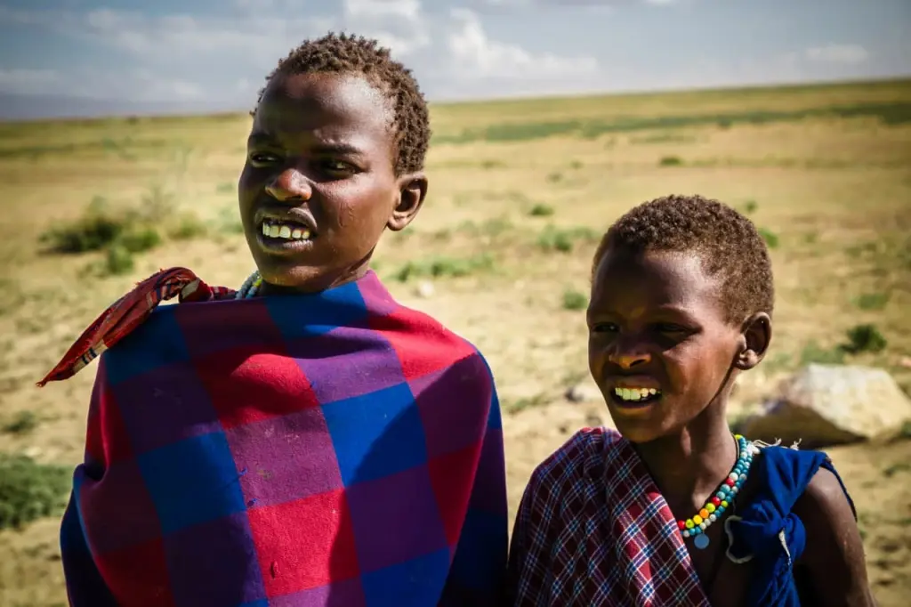
Today we have an opportunity to observe the life of tribal society in its natural manifestation. No texts, photographs, or video footage can replace a live communication with the people who bear the traditions that were once the norms for many peoples on the planet. It is all the more surprising that today's tribes inhabit the same places from which the history of modern humanity began hundreds of thousands of years ago.
If you want to see the colorful Maasai with your own eyes and get in touch with their unique culture, write to us. Angelino Adventures will be happy to arrange your trip to an authentic Maasai village in Tanzania.
All content on Angelino Adventures is created with expert insights and thorough research, in line with our Editorial Policy.


Want to know more about Tanzania adventures?
Get in touch with our team! We've explored all the top destinations across Tanzania. Our Kilimanjaro-based adventure consultants are ready to share tips and help you plan your unforgettable journey.
 Tanzania Safaris
Tanzania Safaris
 Kilimanjaro and other mountains
Kilimanjaro and other mountains
 About Angelino Adventures
About Angelino Adventures
 About Tanzania
About Tanzania


Yes, you can purchase it at souvenir shops, but you also need to check the customs regulations of your home country to ensure it is legal to bring in.